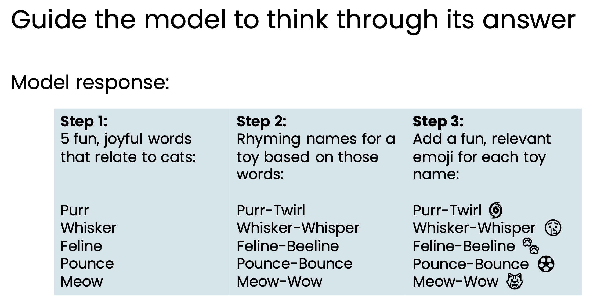

🚀 Freelancing 101 Cheatsheet
This cheatsheet summarizes the contents of this video: speedrun of Generative AI For Everyone. Screenshots come directly from slides used in the course. All credit goes to DeepLearning.AI
🔠What is generative AI?
🔠LLM Use Cases
LLMs have any use cases including:
✍️ Writing
- Brainstorming ideas (e.g., PEP names)
- Developing strategies (e.g., sales strategy)
- Translation (e.g., Hindi to English)
📚 Reading
- Proofreading (e.g., essay)
- Summarizing (e.g., call center conversations)
- Routing (e.g., email complaint to correct department)
- Monitoring (e.g., dashboard to track customer sentiment)
💬 Chatting
- Chatbot (e.g., customer service chatbot)
It’s useful to further think of LLM use cases as split into two groups.
Here are some examples of tasks that LLMs can carry out 👇
What LLMs Can And Cannot Do
Can a fresh college graduate follow the instructions in the prompt to complete the task?
📠Assumptions for clarity
- No access to the internet or other resources
- No training specific to your company/business
- No memory of previous tasks completed
- You get a different fresh college grad every time!
âš ï¸ Other things to pay attention to
- Knowledge cutoffs (e.g., wouldn’t know current news)
- Hallucinations (e.g., claiming incorrect statements albeit confidently)
- Input and output limits (e.g., can’t write an entire book in one go)
- Does not work well with tabular data (e.g., don’t ask it to query and/or join tables)
- Works best with unstructured data (e.g., text, images, audio, video)
- Bias and toxicity (e.g., just assumes that doctors are men and nurses are women)
Tips For Prompting
Tip 1 👇
Tip 2 👇

Tip 3 👇
Developing GenAI Projects
GenAI projects can be developed much faster than traditional supervised learning projects.
The steps are also quite different.
It also costs less than you would think, especially if you compare it to how long it would take a human to perform the task like reading through reviews, writing a report, or classifying documents.
However, building generative AI is a highly empirical (experimental) process – we repeatedly find and fix mistakes.
Ways To Improve Generative AI Results
💬 Prompting i.e., experiment with prompts
🔠Retrieval augmented generation (RAG) i.e., give LLM access to external data sources
🎛️ Fine-tune models i.e., adapt LLM to your task
🧠Pretrain models i.e., train LLM from scratch
How To Choose A Model
Consider the model size that you need. If you are concerned about device computation power and cost, you choose a smaller model and fine-tune it for your specific task.
Consider open vs. closed source.
Augmentation vs. Automation
Augmentation is different from automation.
👥 Augmentation
Help humans with a task. E.g., recommend a response for a customer service agent to edit/approve.
⚙️ Automation
Automatically perform a task. E.g., automatically transcribe and summarize records of customer interactions.
For some tasks, businesses will start with augmentation, and gradually move toward automation.
Generative AI Potential
AI doesn’t automate jobs, it automates tasks. Most jobs involve a collection of many tasks.
We evaluate AI potential on two criteria 👇
⚙️ Technical feasibility: Can AI do it?
💰 Business value: How valuable is it for AI to augment or automate this task?
AI will give rise to many changes to our workflows, including increasing productivity, introducing new steps like human verification, and giving rise to completely new workflows such as prompt based analysis and suggestions.
Generative AI will disproportionatelyimpact higher paid jobs…
…and specific sectors.
Concerns About AI
😈 Concern 1: Amplifying humanity’s worst impulses

💼 Concern 2: Job Loss

HOWEVER, 5 years later we have a more accurate statement 👇

â˜ ï¸ Concern 3: Human Extinction

The next frontier that researchers are working towards is Artificial General Intelligence (AGI), which is when an AI can do any intellectual task that a human can.
Responsible AI
The dimensions of responsible AI are: Fairness, Transparency, Privacy, Security, and Ethical Use
As we continue to work on AI technologies, it’s important to build a culture that encourages discussion and debate, brainstorm what can go wrong, and work with a diverse team.